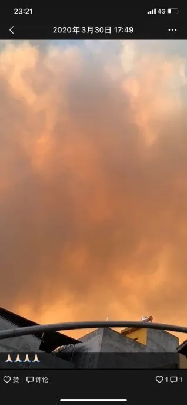
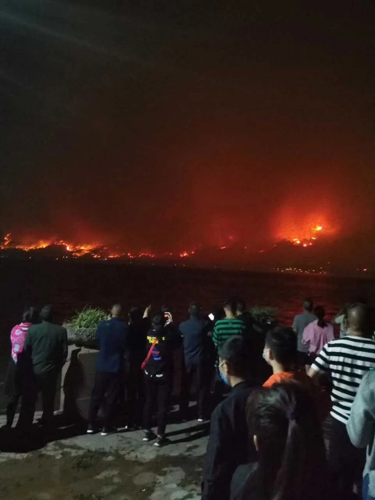
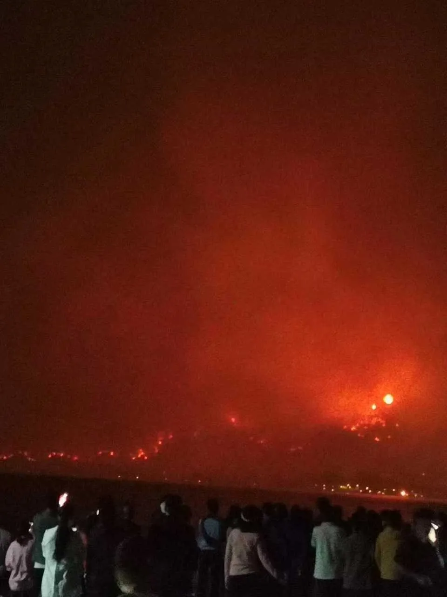
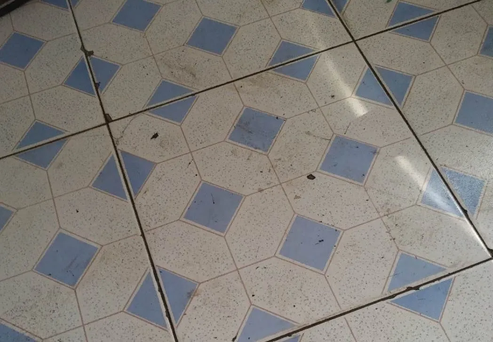
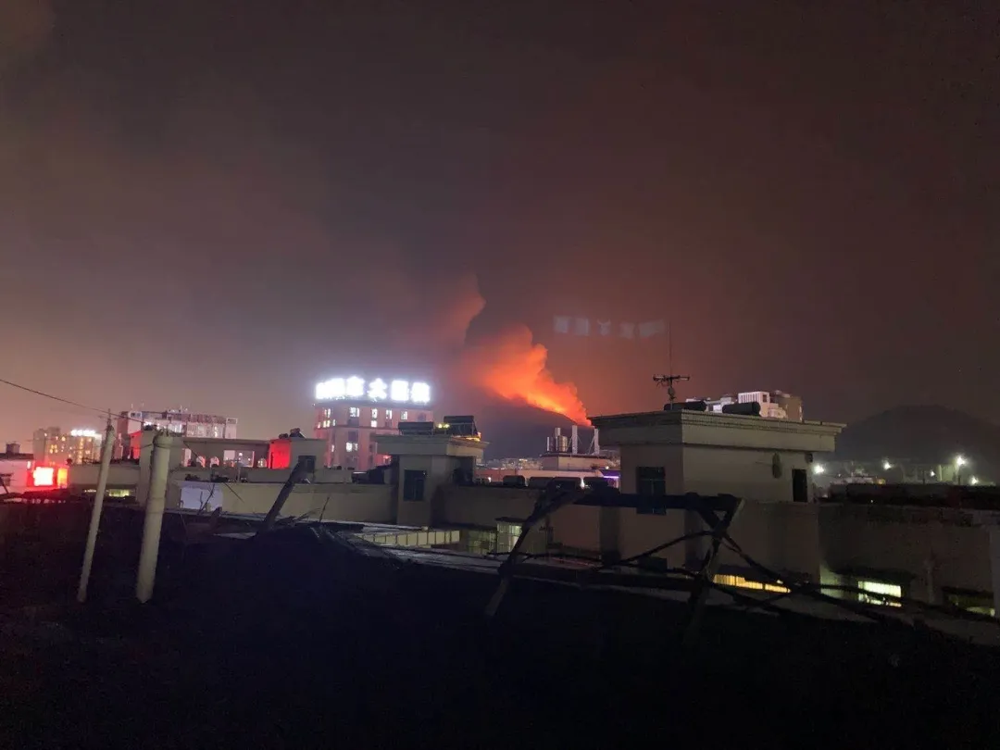
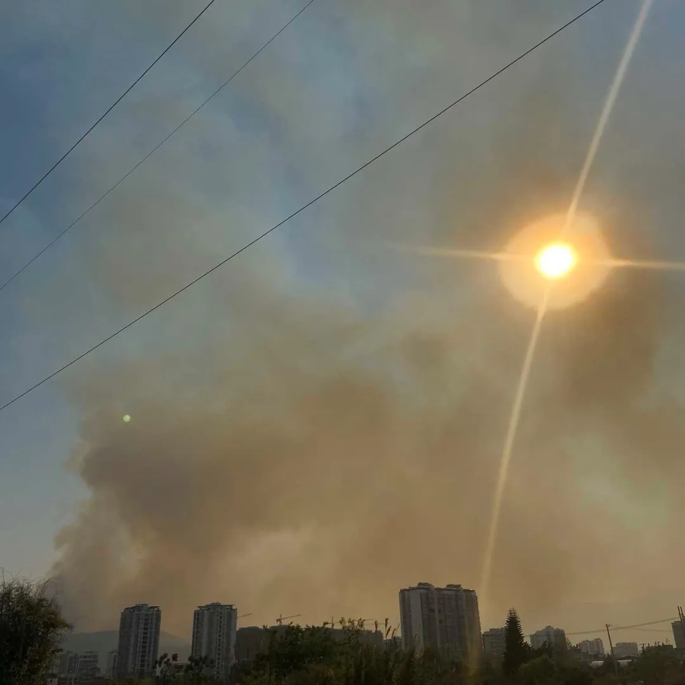
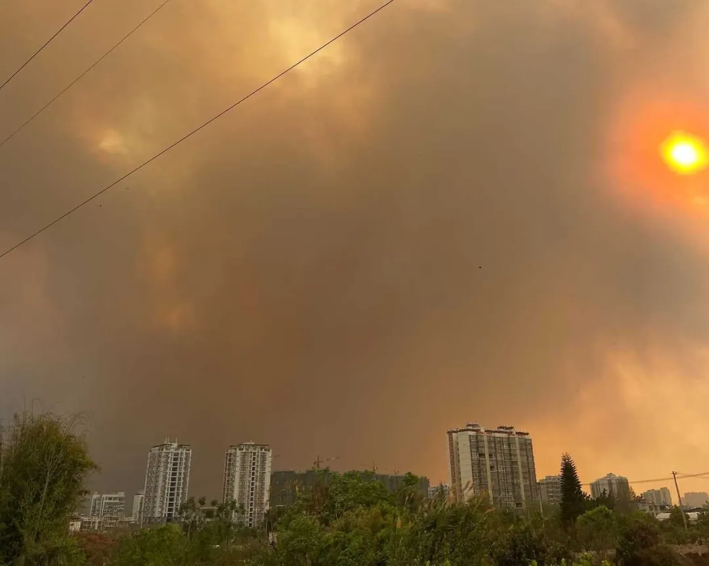

“又着火了”：让西昌市民揪心的泸山大火

采访 | 戴星月 黄嘉文
撰稿 | 戴星月 黄嘉文
美编 | 薛敬文
责编 | 黄嘉文 李苏逸
2020年3月30日下午，四川凉山西昌市泸山发生大火，19名参与扑火的人员牺牲。火灾当天，也是凉山木里火灾发生的周年纪念日。据西昌市政府官方微博“西昌发布V”通报，截至4月3日下午2点，共清理泸山正面大营农场响水沟等六个片区，677个烟点均未发生复燃。
海外新冠疫情如火之际，西昌的这场大火也引发了人们的广泛关注。
“只要他们消防员平安就好！”
樊泽的家就在邛海边，3月30日下午，他看到泸山上空的烟雾，才知道着火了。据他回忆，虽然此前西昌也发生过火灾，但没有这一次那么严重。

4月1日23点左右，樊泽从家向着火点望去，还能看得到泸山上火光。他说：“现在风很大，戴着口罩也能闻到一点烧焦味，不戴口罩气味就很浓。”他的一位朋友在朋友圈发了在邛海边拍的照片：对面山上，大火绵延漫无边际，火光映红了天空，居民们站在邛海的这一边观望。


这几天，樊泽多次听到直升机在城市上空飞过的声音。4月1日，他数了一下：“有四架直升机。”此外，马路上也隐约传来消防车的鸣笛声。
樊泽另一位朋友的住地距离着火点很近，所以，在3月31日晚，也就是着火点再次复燃的时候，朋友一家抓紧撤离到了更安全的地方。
为了让火情早日得到控制，樊泽在微博转发捐赠灭火器的消息，“昨天（指3月31日）就已经捐了很多了”。
得知此次火灾导致19名参与西昌森林火灾扑火人员牺牲的消息，樊泽感觉很揪心：“我觉得山烧了没关系，以后重新种树就好。只要他们消防员平安就好！”
“我们这里有千年古刹光福寺，彝族奴隶社会博物馆，他们都帮我们保住了！”
“最希望所有能帮我们扑火的消防员能平平安安地回来！”
“我家离着火点大概7公里”
3月30日晚上8点38分，定居在南京的西昌人杨福通过新闻得知了西昌发生森林火灾的消息。新闻显示着火点在离市区不远的泸山，杨福想起就在下午，母亲还发了自己在着火点附近公园玩耍的朋友圈，他立刻给母亲打了电话。
十分钟后，电话接通了。母亲告诉杨福：“家里的桌子上都是灰，傍晚出门戴口罩也很呛人，晚上睡觉都不能开窗户。” 确认火情很严重后，杨福让家人迅速撤离，但母亲觉得问题不大。此前，杨福的姐姐得知着火的消息，便给母亲打电话让她赶紧回家，但母亲还是选择先去朋友家吃饭再回家。

电话里，杨福坚持让母亲赶紧住到更安全的地方。在杨福的坚持下，本来不太在意的母亲最后同意到亲戚家先住一段时间。杨福的姐姐在本市医院上班，必须留下，杨福只好让她下班后到比较偏远的同事家住。
3月31日上午，留在西昌的姐姐给杨福发微信，叫他放心：市区附近的火扑灭了，空气也没那么呛人了。
然而，31日晚9时许，杨福姐姐给他发来两张从天台拍的着火点方向的照片，西昌再次刮起了大风，着火点复燃了，远处的火光让杨福姐姐觉得“挺吓人的”，只能时刻保持警惕。

“风吹的时候都有灰在眼睛里”
4月3日15时，一直生活在西昌的杨阳也在时刻关注火情。她告诉记者，火情控制住了：“今天飞机还在飞，应该是在巡视还有没有火点。飞机早上还在拉水，对周围进行巩固。”
杨阳清楚地记得，3月30日下午4点左右，西昌刮起了很大的风，泸山山火产生的烟雾很快吹到了市区的上空，“天空分成了两边，一边是黄色的，一边是蓝色的”。看到这一幕，她的第一反应是，“泸山那边又着火了”。她回忆道，今年的1月12日，马道镇也发生了火灾，但火势很快就得到了控制。


30日下午6点左右，杨阳在家中已经能隐约闻到树木燃烧后散发的焦糊味，她看到，蓝色的天空此时已经变成了深灰黄色，在浓烟中，太阳的边缘模糊不清。晚上7点，杨阳来到了火把广场和海河附近，据她回忆，空气中烟味很浓，“熏眼睛，风吹的时候都有灰在眼睛里”，地上也到处是掉落的灰烬。
杨阳的小婶家就在泸山脚下，3月31日下午5时左右，她们一家接到政府撤离的通知。在撤离前，杨阳的小婶拍下了泸山上正在熊熊燃烧的山火的视频。
00:29
杨阳小婶在泸山脚下拍下的视频/杨阳提供
杨阳说：“从小到大，这是泸山最严重的一次（火灾）。” 据她介绍，每年的春季是四川森林火灾高发期，政府和社区也会进行相应的消防演练和培训，但她也不清楚具体的培训内容。
在此之前，杨阳到泸山游玩过很多次，小时候是去抓螃蟹，还有农家乐。后来则是到山里的光福寺吃素斋。眼看着泸山上火几次复燃，杨阳很痛心：“上面有很多树，还有很多猴子和动物，这些东西并不是一两年就能长起来的。”
“感觉大家都在焦虑、失眠”
李可可不是西昌本地人，但2020年之前的每个寒暑假，她都是在西昌度过的。在她的印象中，除了去年木里的森林大火，西昌周边从没有发生过这样严重的火灾。
李可可住的地方与起火地点离的相对较远。她记得，3月30日起火当天，西昌市区的空气里弥漫着呛人的烟味，漂浮着黑色的细灰。将近下午六点的时候，全市很多地区都停电了。据国务院国资委新闻中心官方微博“国资小新”的消息，3月30日西昌的火灾造成2条220千伏和3条110千伏的输电线路跳闸停运，主供西昌城区的110千伏城郊站单电源运行，3万余户客户供电中断。
直到3月31日，西昌的天空中还隐约可见漂浮着的灰色烟雾。再往后两天，尽管火情三次复燃，但西昌市区的空气和用电基本恢复了正常。
但市民们的心还悬在半空。李可可每天不停地刷着微博，紧密关注着西昌火灾的最新情况。她说，半夜刷同城微博的时候，总是能看到很多人发火情相关的信息，“感觉大家都在焦虑、失眠。大家都很担心一线的扑火队员，也担心生活的这片净土。”
4月1日，李可可在自己的微博里发布了关于物资捐赠的信息，她也想以自己的方式帮帮忙。

李可可告诉我们，很多学生和社会人士自发做志愿者，帮忙输送物资，清点物资，市民们也都积极地捐赠可用的物品。她也联系了相关的志愿者，帮忙在微博上扩散物资捐赠的信息。
4月1日上午，她联系负责物资捐赠的志愿者时，志愿者告诉她，物资已经饱和了。
4月2日中午，火情已基本扑灭，但消防队员们仍在继续进行后续消防工作。李可可立刻转发了这一消息。
她说，自己这几天最担心的就是一线的消防队员和工作人员：“生命比什么都重要，他们是在拼命守护这座城市。”
注：应受访者要求，以上均为化名。
杨阳小婶在泸山脚下拍下的视频也经过匿名化处理。
原网址: 访问
转载请注明来源，欢迎对文章中的引用来源进行考证，欢迎指出任何有错误或不够清晰的表达。可以在下面评论区评论，也可以邮件至 memo_hanabi@outlook.com
文章标题:“又着火了”：让西昌市民揪心的泸山大火
文章字数:2.2k
本文作者:新天地NewEra
发布时间:2020-04-07, 11:03:49
最后更新:2020-04-15, 20:01:26
原始链接:https://mmspace.now.sh/lushan-fire/版权声明: "署名-非商用-相同方式共享 4.0" 转载请保留原文链接及作者。